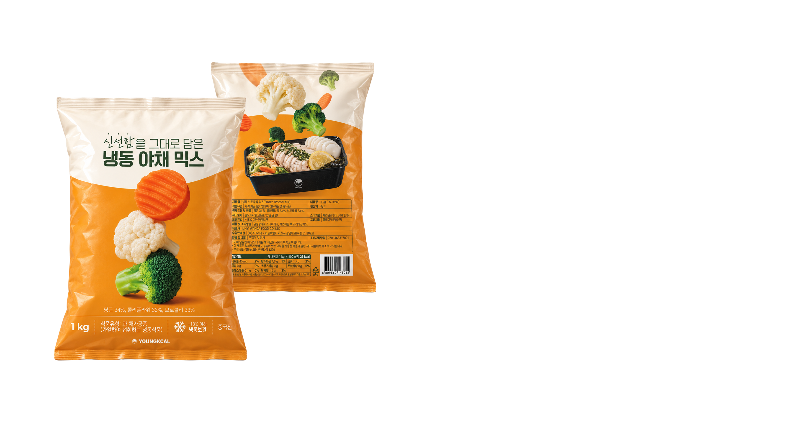
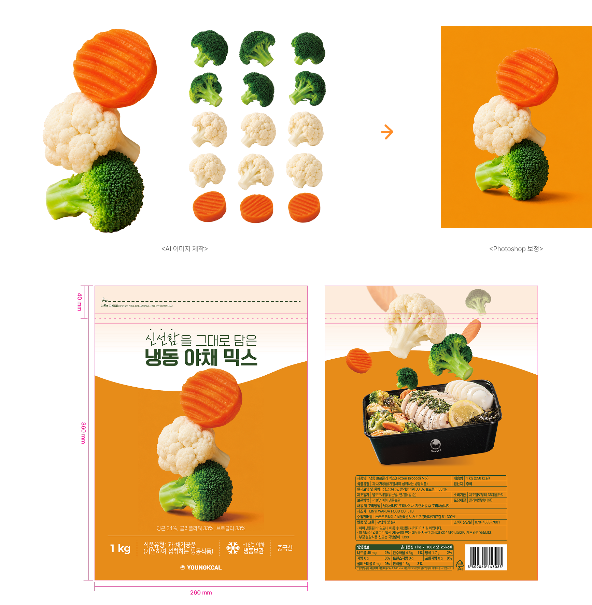

냉동 야채 믹스 패키지 디자인
신선한 채소와 브랜드의 경쾌한 이미지를 담아낸 냉동 야채 믹스 패키지 디자인입니다.
Design Concept
기존 냉동야채 패키지에서 흔히 볼 수 있는 투명 패키지나 채소가 모여
있는 표현에서 벗어나
당근·컬리플라워·브로콜리를 각각
하나의 오브제로 보여주는 방식으로 디자인했습니다.
전면에는 세 가지 채소를 하나씩 쌓아 올린 비주얼을 중심으로 구성해
제품에 어떤 재료가 들어가는지 직관적으로
보여주었습니다.
오렌지 컬러를 사용해 채소의 그린·화이트 컬러와
대비시키고, 냉동식품의 차갑고 정적인 이미지보다
밝고 생동감 있는 인상을 전달하고자 했습니다.
후면은 제품 정보 제공에 그치지 않고, 영칼로리포케의 실제 도시락
메뉴 위로 세 가지 채소가 떨어지는 장면을 연출했습니다.
이를 통해 패키지 속 냉동야채가 실제 메뉴에 활용되는 모습을
자연스럽게 연결하고
제품의 활용도를 시각적으로 보여주었습니다.

Design Process
① AI를 활용하여 당근, 컬리플라워, 브로콜리
이미지 제작
② Photoshop 합성 및 색감 보정
